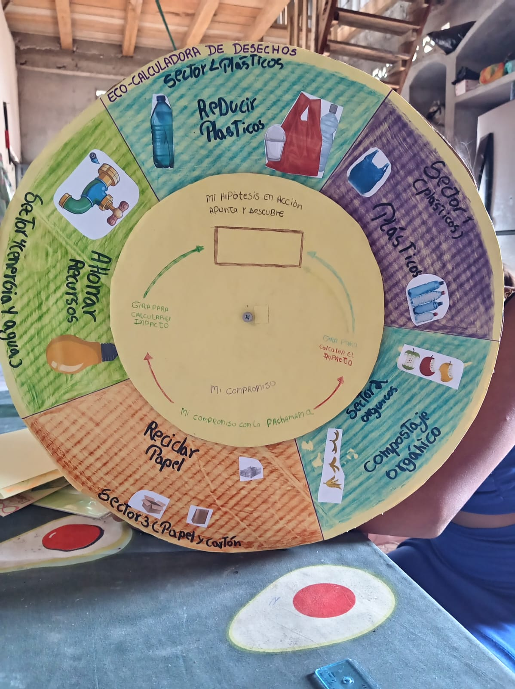
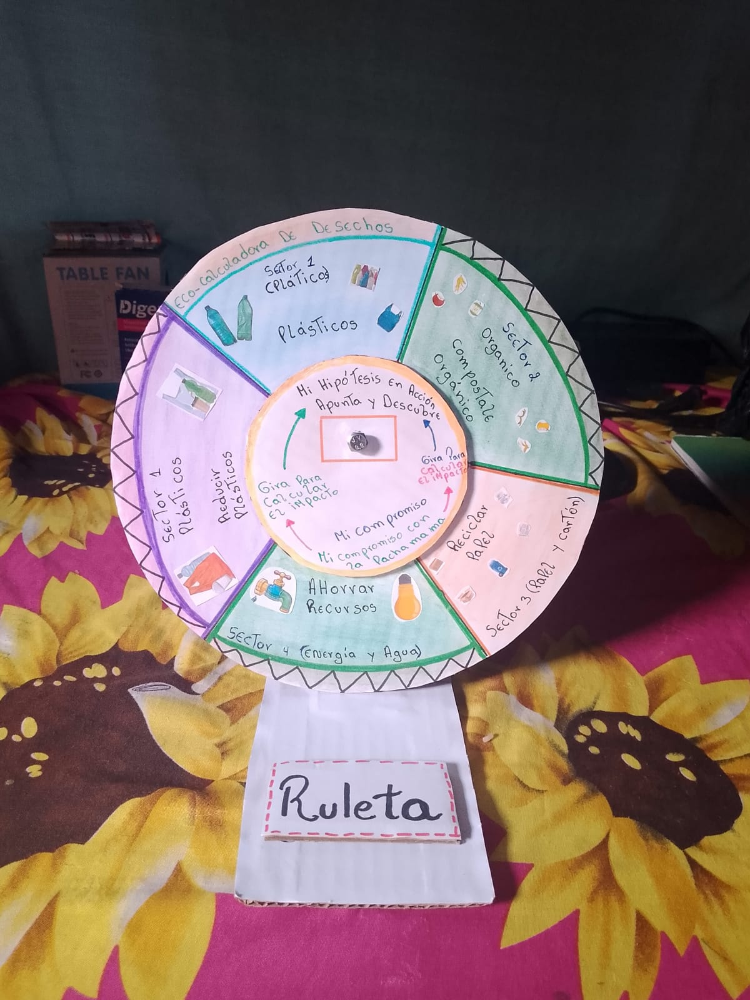
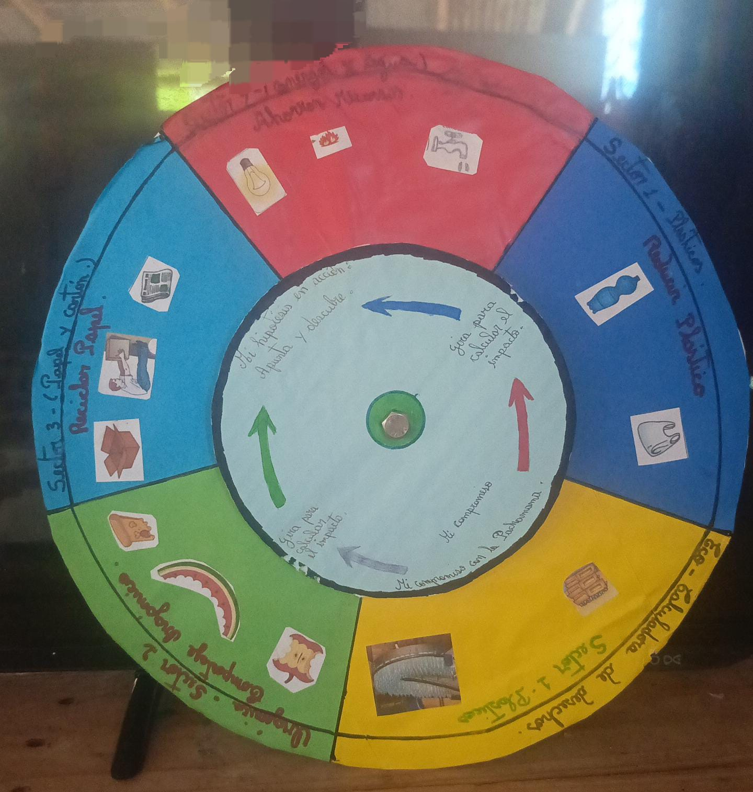
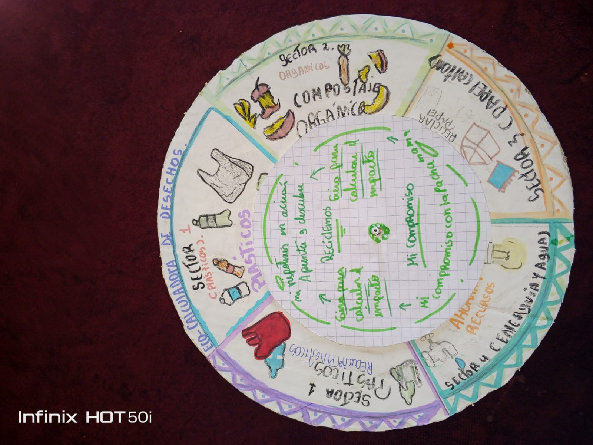
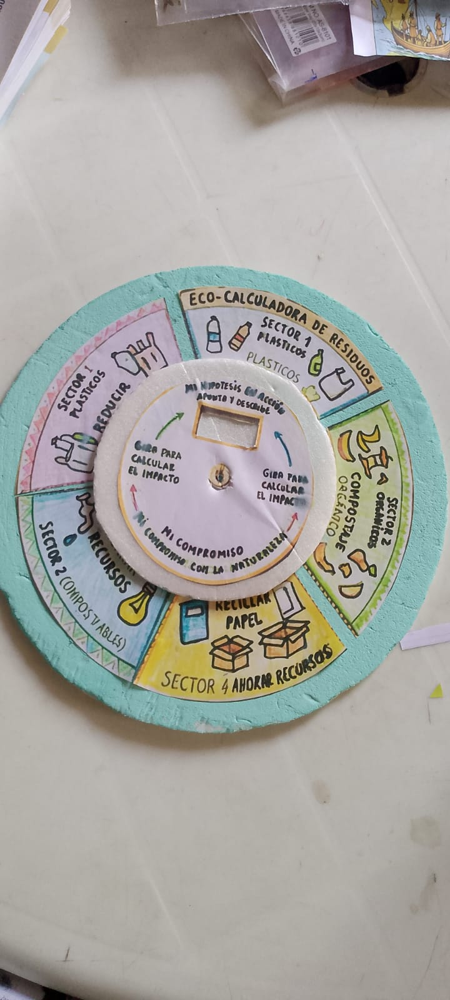

Fases del Proyecto
1. Planteamiento del problema
Analizar cómo los hábitos diarios (uso del agua, energía, generación de basura) impactan el entorno local.
2. Formulación de hipótesis
Guiar a los estudiantes a proponer suposiciones sobre cómo cambiar un hábito reduce el daño ambiental.
3. Registro de compromisos
Diseñar una lista escrita de estrategias de consumo responsable aplicables en el hogar.
4. Elaboración de la evidencia
Redactar y registrar la hipótesis y los compromisos ecológicos en una hoja de la libreta física.
Evidencias: Eco-Calculadoras




